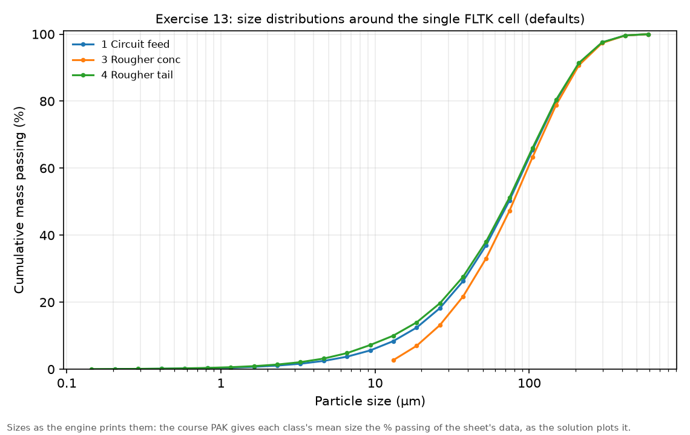
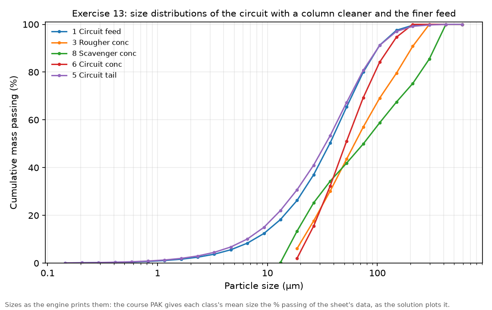

Exercise 13: advanced flotation model
module 5 · King 9.3 (distributed rate constants), 9.7 (the froth phase)
Read in King: King 9.3 · Distributed rate constant kinetic model for flotation · p. 295King 9.7 · The froth phase · p. 311
The exercise sheet and the worked files live on the PC copy of Malla; the sheet's numbers are transcribed in this guide.
On this page
What they ask
The sheet is Ex_13.pdf (Bertil Pålsson, 2010-11-23, two pages). Its purpose is to find the limits of the model FLTK, whose rate constants are defined per particle class and over the S-classes, so that they depend on particle size and on the conditions in the froth, and stay the same for a whole circuit. The sheet writes the recovery of each S-class as
2.1 A single cell. From an earlier flowsheet, a mixer and one flotation cell. The ore is that of Exercise 12, perfectly liberated, at 75 t/h and 40 % solids:
| Fraction | Mineral | Formula | Density (g/cm³) | % Cu | % Fe |
|---|---|---|---|---|---|
| 0.80 | Gangue | 2.7 | |||
| 0.085 | Pyrite | FeS₂ | 5.0 | 46.5 | |
| 0.115 | Chalcopyrite | CuFeS₂ | 4.2 | 34.6 | 30.4 |
The system has 25 size classes, 3 grade classes and 4 S-classes, and the feed an RRS distribution with = 100 µm and a spread of 1.2, given at 20 mesh sizes; the simulated feed grades should be close to the table's. The S-classes have rate constants 0, 0.12, 0.8 and 2.5 1/min, and the minerals spread over them as in Exercise 12:
| S-class | K (1/min) | Gangue (G1) | Pyrite (G2) | Chalcopyrite (G3) |
|---|---|---|---|---|
| 1 | 0.0 | 0.88 | 0.47 | 0.17 |
| 2 | 0.12 | 0.12 | 0 | 0 |
| 3 | 0.8 | 0 | 0.53 | 0 |
| 4 | 2.5 | 0 | 0 | 0.83 |
The model is FLTK, the cell 10 m³ with 15 % air, the concentrate at 55 % solids, and every other parameter at its default. The sheet's list, whose numbering is jumbled in the PDF, asks in this order: run and extract the machine report; plot the size distributions; split the same volume into 2, 4, 5, 8 and 10 cells and note the grades and recoveries; back in one cell, lower the air until the competition for bubble surface makes the grade go up, and say when that happens; at that low air, change in turn the froth transmission coefficient, the average bubble size and the bubble residence time to fair values, and judge whether the model answers reasonably; and lower the largest floatable particle to 200 µm.
2.2 The circuit. Take the closed circuit of Exercise 12 with FLTN, put FLTK in every unit with the same cells and sizes, and give the other parameters reasonable values per stage. (1) Is the first run reasonable? (2) If not, adjust the circuit. (3) Replace the cleaner series with a single flotation column of 0.6 m diameter, with values typical for a column. (4) Change the feed to = 50 µm and run again.
How the work flows
Part 2.1 is an experiment on one cell with a strict rule: change one value, run, compare with the case before, and keep a log. The cases build on each other, because the sheet asks for the froth and bubble changes at the low air rate found before them, and for the 200 µm limit after them. Part 2.2 takes the closed circuit of Exercise 12 and runs it four times, each run a copy of the last with one change: FLTK as it comes, an adjusted circuit, a column as cleaner, and a finer feed.
- Fixed for every run: the ore, its material (25 sizes, 3 grade classes, 4 S-classes) and, except in the last run, the feed of 75 t/h at 40 % solids with = 100 µm.
- Chosen once: FLTK in every flotation unit, and the rate constants of the S-classes.
- Turned in 2.1: the number of cells at a constant volume; the air rate; the froth transmission coefficient, the bubble size and the bubble residence time; the largest floatable particle.
- Turned in 2.2: each bank's air, froth transmission and largest floatable particle; then the cleaner's form; then the feed's size.
- Read after each run: the bubble loading, the concentrate's tonnage, % Cu and Cu recovery, the size curves, and in the circuit the flows that circulate.
- Compared at the end: which knobs of FLTK change the result and in which direction, and whether the circuits make sense as plants.
| Run | What you change | What you read | When to stop |
|---|---|---|---|
| Single cell, defaults | FLTK: 1 cell of 10 m³, concentrate at 55 %, the rest at defaults | The report, the bubble loading, the size curves | One run |
| Cells | 2, 4, 5, 8 and 10 cells with the same 10 m³ | Recovery and grade | After five runs |
| Air | The aeration per m³, down from 1.0 | The bubble loading and the grade | When the grade jumps |
| Froth and bubbles | At the low air: froth transmission, then bubble size, then bubble residence time, one at a time | Loading, recovery and grade against the low-air case | After each has been read |
| Largest floatable particle | 200 µm | Recovery and the concentrate's size | One run |
| Circuit | FLTK in every bank; adjust; column cleaner; finer feed | Stage flows, the circulating load, the circuit concentrate and tailing | After the finer feed |
How to check a run
- The feed. About 3.98 % Cu and 7.45 % Fe, as in Exercise 12.
- The bubble loading. The report gives it for every cell, in per cent of the bubble surface that is covered. Near 100 % the bubbles are full, and that is when the grade can move.
- The air. FLTK has no field for the air fraction: the air in a cell is the aeration rate times the bubble residence time (see Before MODSIM), so check the air-free pulp volume in the report.
- The circuit's feed. In a closed circuit, the rougher's feed against the 75 t/h of fresh ore is the circulating load; a plant does not run with the rougher fed four times the ore.
Why (the engineering)
Floatability in classes, rate in each particle. FLTK is King's distributed rate model with a physical picture behind the rate constant (King, section 9.3). Each S-class has a rate constant, and each particle's rate also depends on its size: particles near the size of maximum recovery float fastest, and particles above the largest floatable size do not float at all, because the bubble cannot lift them. That is why a finer or coarser feed changes the result here, where Klimpel's model could not see size.
The bubbles carry the particles, and their surface is limited. Particles are carried to the froth on the surface of bubbles, and that surface is finite: it grows with the air rate and with smaller bubbles. The model tracks the bubble loading, the share of the bubble surface that is covered. While bubbles have free surface every particle that meets one can attach, so the recovery barely changes; once they are full, particles compete for the surface, the fast-floating chalcopyrite wins, and the concentrate gets cleaner but smaller. This competition is the mechanism the sheet asks about.
The froth loses part of what reaches it. Not everything that reaches the froth ends in the concentrate: particles drop back as bubbles coalesce and burst. The froth transmission coefficient is the share that survives, from 0 to 1, and it is where the froth depth and the wash water of a real cell show up (King, section 9.7).
A column is a different machine. A flotation column is tall and narrow, with a deep froth washed from above, less air and finer bubbles, and a long bubble path. It cleans better but floats more slowly. In GUI 0.9.12 the Flotation Column unit offers only KLIC, Klimpel's column model, which does not use the S-classes; the course file therefore models the column as one FLTK cell of 2 m³ with column-like values, and this guide does the same.
Before MODSIM: numbers by hand
How much air is in the cell. FLTK takes the aeration rate (m³ of air per minute per m³ of cell) and the time a bubble spends in the pulp. At the defaults, 1.0 per minute and 10 s:
So 16.7 % of the cell is air, close to the sheet's 15 %, and the report shows 0.833 of each cubic metre left for pulp, 8.33 m³ in the cell. The sheet's 15 % is not a field of this model; it comes from these two numbers.
How much bubble surface the air brings. A bubble of diameter has square metres of surface per cubic metre of air. With bubbles of 2 mm that is 6/0.002 = 3000 m²/m³, and the cell's 10 m³ of air per minute brings 30 000 m² of bubble surface per minute. At an air rate of 0.1 there is ten times less, 3000 m² per minute, for the same particles, which is why the loading climbs from 5 % to 66 %. Bubbles of 1 mm double the surface at the same air, and the loading falls back to 27 %.
The froth coefficient and the air are the same knob here. At an air rate of 0.1, a froth transmission of 0.7 gives 16.05 % Cu at 73.8 % recovery on the engine, and an air rate of 0.07 without the coefficient gives 16.05 % Cu at 73.8 % too. Since 0.7 × 0.1 = 0.07, on this engine the coefficient works like a cut in the air that reaches the froth.
Where Exercise 12's numbers went. The S-class table puts 0.83 of the chalcopyrite in the class of 2.5 1/min, 0.53 of the pyrite in the class of 0.8 and 0.12 of the gangue in the class of 0.12. Those are Klimpel's ultimate recoveries and rate constants of Exercise 12, rearranged: what FLTK adds is size, air, bubbles and froth.
A column of 0.6 m. Its cross-section is π × 0.3² = 0.283 m², so the course file's column of 2 m³ stands about 7 m tall, which is a typical column height.
The circulating load of a circuit. In the adjusted circuit the rougher is fed 226 t/h while 75 t/h of ore enter, so
the circuit circulates twice the ore it treats. With the column it is (330 − 75)/75 = 3.4 times, which the solution calls unreasonably high.
Step by step in MODSIM
The ready-made projects: not in the Examples folder yet, and why
The PC copy of Malla has this exercise solved on the MODSIM engine in Simulation of Mineral Processing/Examples/Ex13 Advanced flotation model/: the single cell with every case of the solution, an air sweep the solution does not run, the four circuits, the answers to the sheet's questions and two figures. The projects to open in the GUI are not there yet.
- Why. FLTK needs the material of Exercise 12's FLTN part, with three grade classes and four S-classes, and no project saved by GUI 0.9.12 shows yet how the GUI stores it. Saving DistribRateCircuitClosed.PAK once from the GUI as a project shows it, and then the single cell with its cases and the four circuits join the folder, each checked against the engine's runs.
- Meanwhile. FLTKoneCell.PAK, ClosedCircuit.PAK, ClosedCircuitwColumn.PAK and ClosedCircuitFinewColumn.PAK open in the GUI with everything defined.
Start from Exercise 12: the FLTN material and a single cell
Open your Exercise 12 FLTN project and Save As Ex13_cell; keep the material (25 sizes, 3 grade classes, 4 S-classes, the RRS feed of 100 µm and 1.2); on a new flowsheet, or with the circuit deleted, place Mixer-1 and one Flotation CellThe cell: FLTK, one cell of 10 m³, concentrate at 55 %
Double-click the cell > FLTK (the unit's default) > fill as in the fold; Run; copy the machine report; plot the size curves of feed, concentrate and tailingFlotation Cell → FLTK, flotation bank (King distributed-k): twelve fields
- Cells in series (N) = 1 for the first case; 2, 4, 5, 8 and 10 in the cells series.
- Cell volume (V) = 10 m³ (the default is 3), then 5, 2.5, 2, 1.25 and 1 m³ so that the total stays 10 m³.
- Aeration per m³ (Q_air) = 1 (the default), in m³ of air per minute per m³ of cell. The air series lowers it.
- Froth transmission γ (γ) = 1 (the default): everything that reaches the froth reports to the concentrate. A fair value for a real froth is below 1; the solution tries 0.7.
- Bubble size (d_b) = 0.002 m (the default, 2 mm); the solution tries 1 mm.
- Bubble residence time (τ_b) = 10 s (the default); the solution tries 20 s. Together with the aeration it sets the air in the cell.
- Cell holding time (θ) = 40 min, the default, only a first estimate: the engine works out the real residence time from the flows and prints it for every cell. The course file carries 60.
- Percent solids in conc. (%S) = 55 % (the default is 30).
- Banks in parallel (N_p) = 1.
- Size at maximum recovery (d_max) = 50 µm (the default): particles near this size float fastest.
- Largest flotable size (d_coll) = 1000 µm (the default), then 200 µm in the last single-cell case.
- Flotation rate constants (per S-class) (k_i) = 0, 0.12, 0.8 and 2.5 1/min, the sheet's S-classes.
The same 10 m³ in 2, 4, 5, 8 and 10 cells
Set N and V in pairs (2 and 5, 4 and 2.5, 5 and 2, 8 and 1.25, 10 and 1); Run each; log the Cu recovery and gradeBack to one cell, and less air until the grade rises
N = 1, V = 10; lower the aeration in steps (0.5, 0.3, 0.2, 0.15, 0.1, 0.07, 0.05); Run each; log the bubble loading, the grade and the recoveryAt the low air, the froth, the bubble size and the bubble residence time, one at a time
Aeration 0.1; then froth transmission 0.7, Run, back to 1; then bubble size 0.001 m, Run, back to 0.002; then bubble residence time 20 s, Run, back to 10; then largest flotable size 200 µm, RunThe circuit: FLTK in every bank of Exercise 12's closed circuit
Open the closed FLTN circuit of Exercise 12 and Save As Ex13_circuit; every bank to FLTK with the same cells (rougher and scavenger 5 × 2 m³, cleaner 4 × 0.5 m³), froth transmission 0.7, bubbles of 2 mm, residence 10 s, largest floatable 200 µm; RunAdjust the circuit, then a column as cleaner, then a finer feed
Rougher: aeration 1.5, largest floatable 300 µm; scavenger: aeration 2, froth transmission 0.3, largest floatable 400 µm; cleaner: aeration 0.8, rate constants 0, 0.09, 0.6 and 2.5; Run and save. Then the cleaner as one FLTK cell of 2 m³ with aeration 0.5, froth transmission 0.5, bubbles of 1 mm, residence 50 s, concentrate at 40 %; Run and save. Then the feed's RRS d63.2 to 50 µm; Run and saveExpected results
The engine of GUI 0.9.12 reproduces the suggested solution SolEx_13.pdf: in the single cell every recovery within 0.11 and every grade within 0.01 points, and in the circuits every flow within 0.4 %. In every pair the engine's number comes first and the solution's second.
The single cell, one change at a time.
| Case | Bubble loading % | Concentrate t/h | Cu recovery % | % Cu |
|---|---|---|---|---|
| Defaults (air 1.0) | 5.13 / 5.13 | 16.7 / 16.7 | 78.4 / 78.32 | 14 / 14 |
| Air 0.1 | 66 / 66.04 | 16.5 / 16.44 | 77.9 / 77.8 | 14.1 / 14.12 |
| Air 0.1, froth transmission 0.7 | 99.7 / 99.66 | 13.7 / 13.7 | 73.8 / 73.69 | 16.1 / 16.05 |
| Air 0.1, bubbles of 1 mm | 27.1 / 27.09 | 16.6 / 16.59 | 78.2 / 78.19 | 14.1 / 14.07 |
| Air 0.1, bubble residence 20 s | 68.8 / 68.76 | 16.5 / 16.51 | 78.1 / 78.02 | 14.1 / 14.1 |
| Air 0.1, largest particle 200 µm | 63.7 / 63.66 | 14.9 / 14.89 | 70.7 / 70.57 | 14.1 / 14.14 |
The air series, run on the engine only, shows where the grade turns:
| Air (m³/min per m³) | Bubble loading % | Cu recovery % | % Cu |
|---|---|---|---|
| 1.0 | 5.13 | 78.35 | 14.00 |
| 0.3 | 17.52 | 78.28 | 14.04 |
| 0.1 | 66.04 | 77.86 | 14.12 |
| 0.07 | 99.66 | 73.78 | 16.05 |
| 0.05 | 99.91 | 66.57 | 19.78 |
- The report. It gives the cells and banks, the volume, the aeration, the air-free pulp volume, the froth transmission, the bubble size and residence time, the % solids of feed and concentrate, the size of maximum recovery, the largest floatable particle, the rate constants, and for every cell its bubble loading and pulp residence time.
- The size curves. The concentrate comes out slightly coarser than the feed ( of 79 µm against 74 µm) and the tailing slightly finer (72 µm).
- The largest particle at 200 µm. The coarse chalcopyrite no longer floats, so the recovery drops by 7 points and the concentrate becomes finer: its printed falls from 154 to 128 µm.

The circuits.
| Circuit | Rougher feed t/h | Circuit concentrate | Circuit tailing |
|---|---|---|---|
| FLTK as it comes | 75.1 / 75 | 15.2 t/h at 13.9 % Cu | 59.8 t/h at 1.44 % Cu |
| Adjusted | 226 / 226.2 | 15.8 t/h at 14.2 % Cu | 58.5 t/h at 1.12 % Cu |
| Column as cleaner | 330 / 330 | 16.1 t/h at 18.3 % Cu | 58.8 t/h at 1.19 % Cu |
| Column, feed of 50 µm | 306 / 305.7 | 14.1 t/h at 18.6 % Cu | 62.1 t/h at 1.67 % Cu |
- The first run (item 1). Not reasonable: the scavenger floats 0.04 t/h and the cleaner returns nothing.
- Adjusted (item 2). A coarse feed calls for boosted roughers and scavengers; the tailing falls, but the cleaner still does not upgrade, and the return flows are huge.
- The column (item 3). The concentrate reaches 18.3 % Cu, but the rougher is fed 330 t/h for 75 t/h of ore, a circulating load the solution calls unreasonably high.
- The finer feed (item 4). The scavenger cannot cope with what reaches it, so the tailing rises. The solution adds that more material then circulates between rougher and cleaner, but its own fly-outs show the opposite (a rougher concentrate of 158.3 against 183.6 t/h), and that a finer grind should in reality separate chalcopyrite from pyrite better than the model shows.

Common mistakes
- Leaving the cell at 3 m³ and the concentrate at 30 %. Those are FLTK's defaults; the sheet's cell is 10 m³ at 55 %.
- Looking for an air holdup field. FLTK has none: the air comes from the aeration rate times the bubble residence time.
- Stacking the changes of the froth and bubble series. Each one is read against the low-air case, then put back.
- Expecting a lower air rate to raise the grade at once. Nothing happens until the bubbles are full, between 0.1 and 0.07 here.
- Reading a circuit without its circulating load. A concentrate that improves while the rougher is fed four times the ore is not a better plant.
- Using the Flotation Column unit for the column. Its only model, KLIC, ignores the S-classes; the course draws the column as an FLTK cell.
- Typing fitted rate constants into FLTK unchanged. This exercise reuses Exercise 12's constants as they are, but FLTK multiplies each constant by the bubble surface, so constants fitted to plant or laboratory data are calibrated, not copied (the Assignment 4 guide shows how).
Sensitivity analysis
- Number of cells. No effect in one cell of 10 m³ split up to ten ways: the volume is already more than enough.
- Air. Flat until the bubbles saturate, then sharp: from 0.1 to 0.05 the grade rises from 14.1 to 19.8 % Cu and the recovery falls from 77.9 to 66.6 %.
- Froth transmission. 0.7 at an air rate of 0.1 acts like an air rate of 0.07.
- Bubble size. Halving it doubles the bubble surface and moves the loading from 66 to 27 %.
- Largest floatable particle. From 1000 to 200 µm the recovery falls by about 7 points and the concentrate gets finer.
Hand-in checklist
Nothing of this exercise is graded, but the sheet asks to show: